>Week of 27th of October, 2020
- For the purpose of this Exercise Challenge, and a few following Exercises, we have been asked to create a pattern of our choice.
- Pattern that was an inspiration to this Exercise is carpet Pattern from the film Shining by Stanley Kubrick.
- Pattern is consisted of number of different colored hexagons layed on top of one another.
- V3 code is the continuing code for Excersise Challenge - Our Pattern and V2 of that code.
- In V3, another hexagon was created to be displayed at the top of first one.
- Both hexagons were put into separate functions outside of function draw() which are called createHex() and createHex2(). Functions are called in draw function and correctly displayed.
- The outcome of this V3 is the display of 6 hexagons across x-axis and y-axis, and at the top of them, another set of smaller red hexagons is displayed.
- Images of the outcome and inspiration can be seen in the Images folder of this Exercise.
 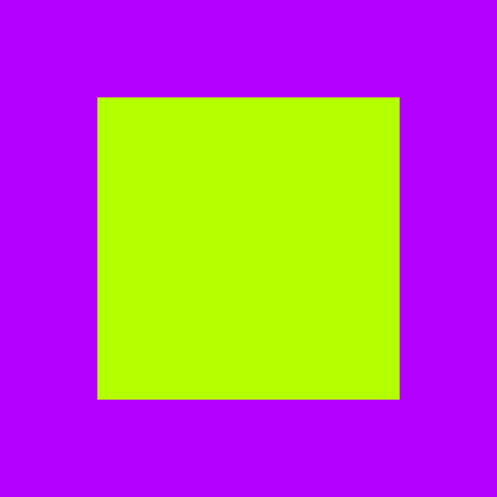
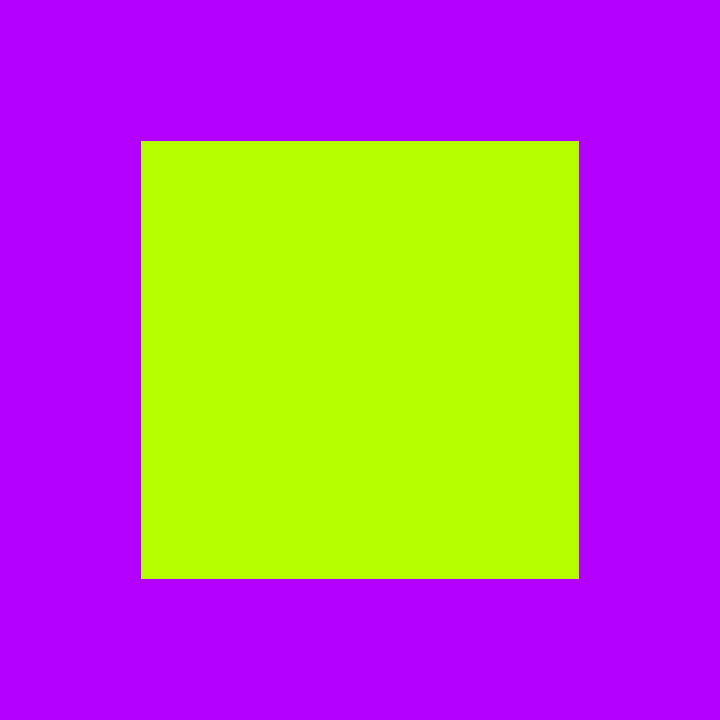
- Exercise 1.2 is an add-on to Exercise 1.1 in which we worked with For Loops and Color.
- Exercise enables user to move the Canvas, by pressing the left key of the mouse.
It also allows user to 'take' a screenshot of the Canvas. If user presses ctrl+S, an Image (screenshot) will displayed as saved on users PC.
- Image that user saves will saved in format of date and time, telling us when user exactly pressed ctrl+S.
Example can be seen in Images folder of Exercise 1.2. .
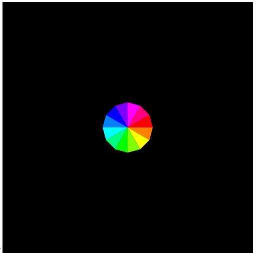
- Exercise 1.3 required from us to create and display a Color Wheel.
- Exercise required from us to be familiar with Math of circle and importance of SOH,CAH,TOA - In this specific case Sin(y) and Cos(x).
- Sin and Cos helped us to position the circle on the canvas by adding the constant variable of radius to it. Example:
let vx= (radius * cos(a)) +250;
let vy= (radius *sin(a)) +250;
- Exercise also includes code for Translation and Mapping, which is greatly used in Exercise 1.4.
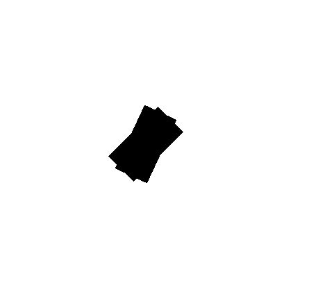
- In this exercise, we learned about translation, along with push() and pop().
- This fairly simple exercise required from us to display two rectangles which have the exact same measurements and use translate() to see how will each move slightly on the Canvas.
- Translate() specifies an amount to displace objects within the display window. It takes two parameters, x - for moving from left to right, and y - for moving up and down.
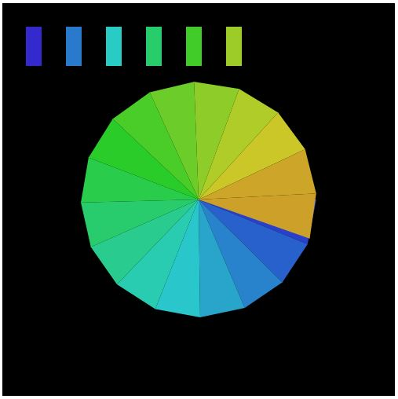
- In this Exercise, we learned how to use Lerp Color function provided by p5.
- Lerp Color function, lerpColor(), blends two colors to find a third color somewhere in between them. It takes three parameters: color1, color2 and amt.
- Amt parameter is the amount between the two values where 0.0 is equal to color1, 0.1 close to color1, 0.5 is in the middle, etc.
- Again for this exercise, we created Circle Wheel (Triangle fan), which we then later filled with colors we lerped using Lerp Color.
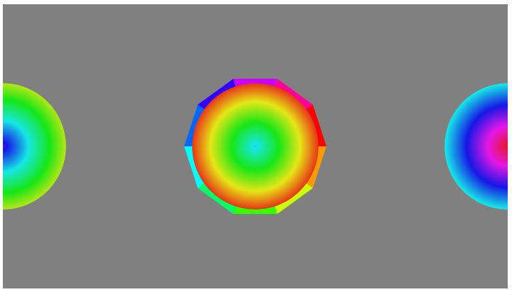
- In this Exercise, we were required to create our own Circle Wheel, based on previous Exercises we did for this module.
- For this Exercise, an if-else statement is created which is passing a mouseIsPressed parameter and drawGradient function. Statement will either display a triangle fan (circle wheel) or make it disappear.
- drawGradient function will change the color within the triangle fan in circular motion.
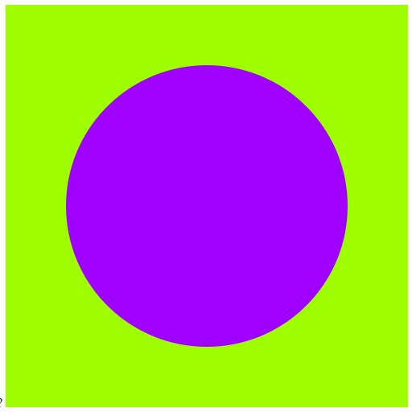
- In this Exercise, we started working on displaying various shapes (in this example circle in the middle of the canvas), which will lead us to work on learning how to create a pattern in further exercises.
- In this exercise, like in most of them, we are using variables that we used for creating Exercise 1.3 - Circle Wheel. numOfSegments, stepAngle, let radius.
- In function setup(), we created canvas, specified color and angle modes (In this exercise we worked in RADIANS).
- In function draw(), we used map function provided by p5 to map numOfSegments and radius values. Map function re-maps the number from one range to another. In example of radius in this exercise, map allowed us to increase or decrease radius as we move the mouse over canvas. If mouse key is closer to the center of the canvas, radius will be smaller, if its further away - radius will be greater.
- keyPressed function is added in this exercise again and it allows us to save a 'screenshot' of the Canvas if we press ctrl+S.
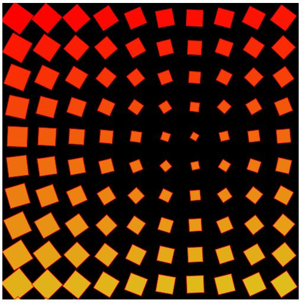
- In this Exercise, we learned how to use rotation (rotate()) function provided to us by P5 and Atan2 function.
- Rotation function, rotate(), rotates a shape by the amount that is specified by angle parameter. Angle mode is important for this function to work and we can use it in either RADIANS or DEGREES.
- Atan2 function, calculates the angle in radians from a specified point to the coordinate origin as measured from the positive point on x-axis.
- In this exercise, we also used dist() function which calculates the distance between two points, as well as map() function which re-maps number from one range to another.
- For this exercise, we worked with variables numOfSquares and squareSize - size of squares is determined by dividing the width of the Canvas, 500, with numOfSquares we want to display on it.
- A for loop was created which first looped throuhgh y-axis values (j) and then throuhg x-axis values (i) in order to draw shape across the Canvas.
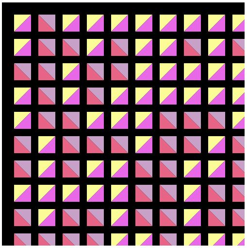
- In this Exercise, we worked on displaying a random pattern, based on random() function provided to us by P5. We started by working with displaying random lines, but later finish product ended up being a display of two triangles filled with different colors - which later form a two-colored squares or one-colored squares displayed on the Canvas.
- Random() function takes either 0, 1 or 2 arguments.
If no argument is given, returns a random number from 0 up to (but not including) 1.
If one argument is given and it is a number, returns a random number from 0 up to (but not including) the number.
If one argument is given and it is an array, returns a random element from that array.
If two arguments are given, returns a random number from the first argument up to (but not including) the second argument.
- Besides the for loop that we had already created for the purpose of previous Exercises, we created an If statements which displays triangles of different colors:
// If statements, which will display either output when it's 0 or 1.
if(random(1) > 0.5){
noStroke();
fill(300,19,78);
//line(0,0,squareSize,squareSize);
triangle(0,0,35,0,35,35);
fill(344,57,91);
triangle(35,35,0,35,0,0);
} else if(random(0) < 0.5){
noStroke();
fill(60,40,99);
//fill(lerpedColor);
//line(0,0,squareSize,squareSize);
//line(0,squareSize,squareSize,0);
triangle(0,0,0,35,35,0);
fill(300,55,91);
triangle(35,35,35,0,0,35);
}
pop();
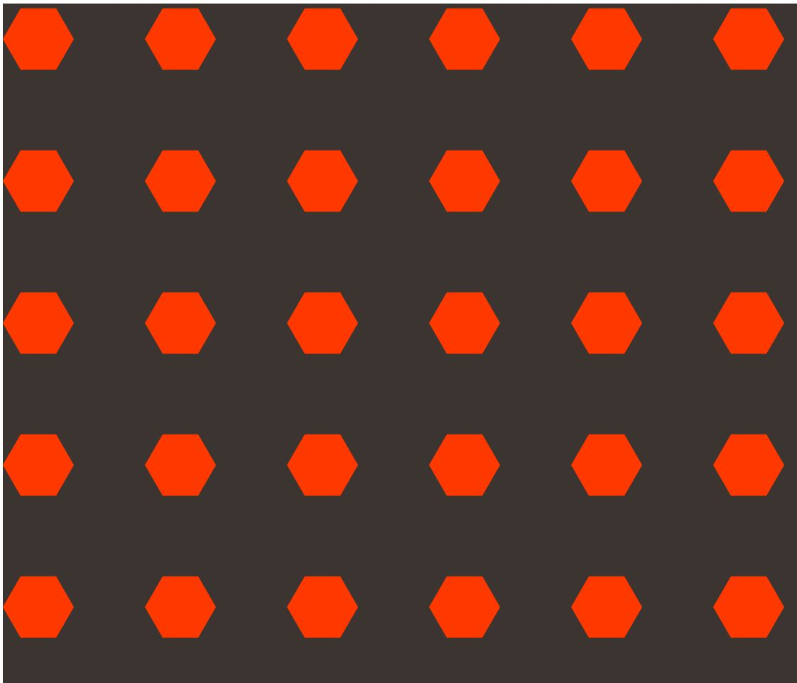
- For the purpose of this Exercise Challenge, and a few following Exercises, we have been asked to create a pattern of our choice.
- Pattern that was an inspiration to this Exercise is carpet Pattern from the film Shining by Stanley Kubrick.
- Pattern is consisted of number of different colored hexagons layed on top of one another.
- For creating a starting look of the pattern, four variables were created - numOfHex, hexSize, stepAngle and radius. Angle mode for this Exercise is set to DEGREES.
- In function draw(), nested for loop was created, to make sure hexagons are displaying across the canvas (6 of them, numOfHex determines hexagons and their shape).
- Inside function draw there is another for loop - put in between push() and pop() for creating hexagonal shape.
- The outcome of this starting code Exercise is the display of 6 hexagons across x-axis and y-axis, colored in orange with lerpColor().
- Images of the outcome and inspiration can be seen in the Images folder of this Exercise.
Week of 20th of October, 2020
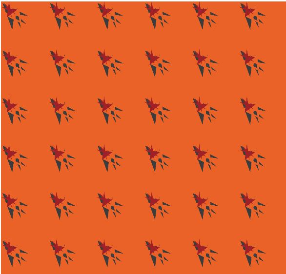
- For the purpose of this Exercise Challenge, and a few following Exercises, we have been asked to create a pattern of our choice.
- Pattern that was an inspiration to this Exercise is carpet Pattern from the film Shining by Stanley Kubrick.
- Pattern is consisted of number of different colored hexagons layed on top of one another.
- V2 code is the continuing code for Excersise Challenge - Our Pattern.
- In V2, another hexagon was created to be displayed at the top of first one.
- Both hexagons were put into separate functions outside of function draw() which are called createHex() and createHex2(). Functions are called in draw function and correctly displayed.
- The outcome of this V2 is the display of 6 hexagons across x-axis and y-axis, which under the change of angleMode from DEGREES to RADIANS turned into a star-like shape.
- Images of the outcome and inspiration can be seen in the Images folder of this Exercise.
Week of 27th of October, 2020
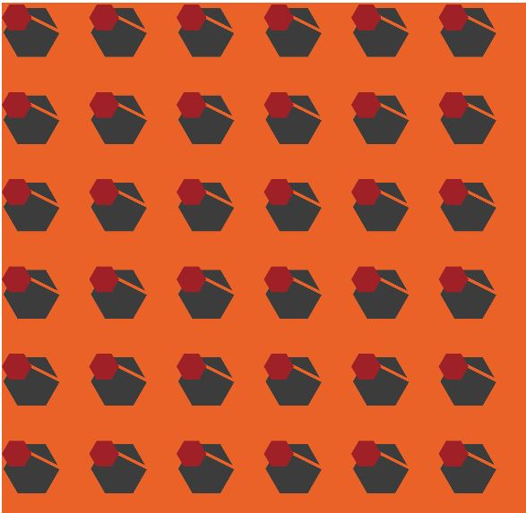
- For the purpose of this Exercise Challenge, and a few following Exercises, we have been asked to create a pattern of our choice.
- Pattern that was an inspiration to this Exercise is carpet Pattern from the film Shining by Stanley Kubrick.
- Pattern is consisted of number of different colored hexagons layed on top of one another.
- V3 code is the continuing code for Excersise Challenge - Our Pattern and V2 of that code.
- In V3, another hexagon was created to be displayed at the top of first one.
- Both hexagons were put into separate functions outside of function draw() which are called createHex() and createHex2(). Functions are called in draw function and correctly displayed.
- The outcome of this V3 is the display of 6 hexagons across x-axis and y-axis, and at the top of them, another set of smaller red hexagons is displayed.
- Images of the outcome and inspiration can be seen in the Images folder of this Exercise.